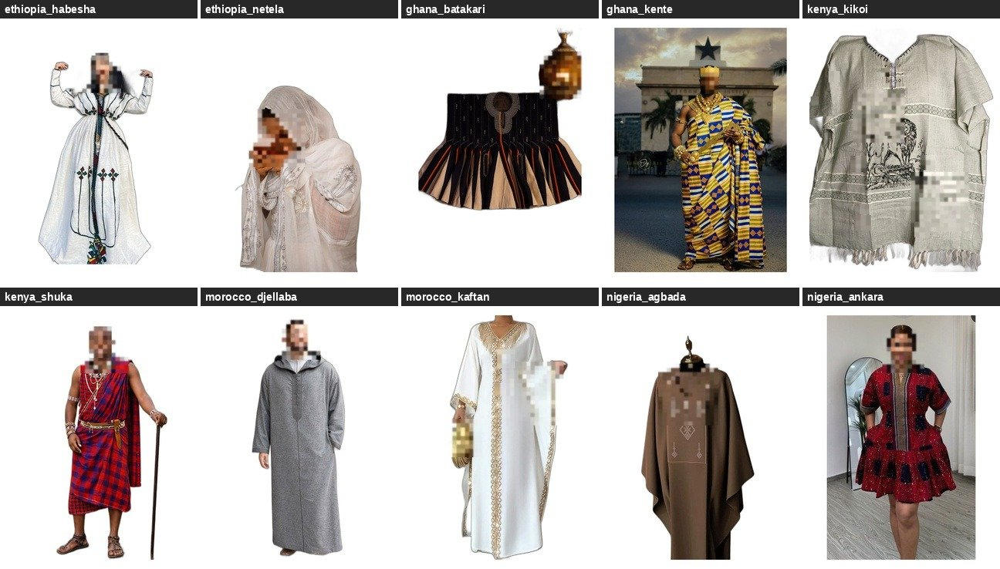
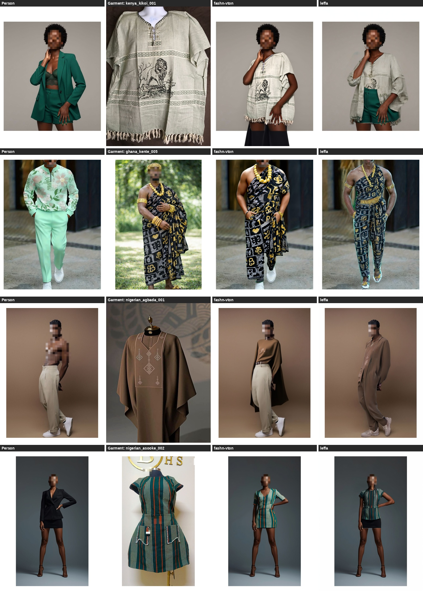

The Problem
Virtual Try-On (VTON) systems have advanced significantly — diffusion-based models like OOTDiffusion, IDM-VTON, CatVTON, and FitDiT now produce photorealistic try-on results on standard benchmarks. But those benchmarks — VITON-HD (13,000 pairs) and DressCode (53,000 pairs) — share a critical flaw: they were curated entirely from Western fashion e-commerce platforms. Garments are overwhelmingly Western in silhouette and lightly textured. Subjects cluster in the lighter half of perceptual skin tone scales.
African textile garments pose a structurally distinct challenge for existing VTON pipelines. Fabrics like Ankara, Kente, Adire, and Aso-Oke carry high-frequency repeating motifs with strong geometric regularity — properties that expose known failure modes in both spatial warping and diffusion synthesis stages. Traditional garments including Agbada, Boubou, and Dashiki have voluminous non-fitted silhouettes that differ substantially from the body-congruent clothing dominant in existing benchmarks.
The gap: Fewer than 0.06% of computer vision papers address African-specific visual domains. No existing VTON work examines model behaviour on African textiles, garment structures, or the skin tone distribution of African subjects.
Dataset Construction
AfriVTON-Bench curates 111 African garment images spanning 16 categories across 7 countries and 5 geographic sub-regions. Images were sourced via web scraping (DuckDuckGo, Wikimedia Commons, Bing using iCrawler) supplemented by targeted manual curation. A Western control set of 50 garments drawn from VITON-HD enables direct African vs. Western comparison on the same inference pipeline.
15 person model images were sourced targeting diverse African subjects across the full Monk Skin Tone (MST) scale — predominantly Monk 7 — with gender labels for future stratified analysis. All garments were annotated with country of origin, geographic region, garment type, visual complexity tier, pattern type, and drape type via Gemini-based classification and manual verification.

Benchmark Pipeline
A cascading face-blur pipeline protects personally identifiable information from scraped images: MediaPipe Face Detection (min confidence 0.35, tuned for darker skin tones) → YuNet → Haar Cascade as fallback. A two-pass strategy applies detection on the full image and on a 2× upscaled top-half crop to catch small faces common in full-body fashion photography. Of 126 images evaluated by the automated QC pass, 115 passed.
FASHN-VTON uses the fashn-vton-1.5 checkpoint (50 denoising timesteps, guidance scale 2.5, seed 42). LEFFA uses spatial warping within the attention mechanism of a diffusion model — a fundamentally different design paradigm. Both models are evaluated zero-shot with no African-specific fine-tuning.
Evaluation Metrics
Four perceptual metrics computed at image level on 768×1024 images using PyTorch with CUDA acceleration:
- gLPIPS (Garment LPIPS) — Learned Perceptual Image Patch Similarity between try-on output and reference garment. Lower = better garment texture preservation.
- gSSIM (Garment SSIM) — Structural Similarity Index between try-on result and garment image. Higher = better structural correspondence.
- DISTS — Texture-sensitive distance metric, more sensitive to fine-grained pattern complexity than SSIM.
- pLPIPS (Person LPIPS) — Perceptual similarity between try-on output and original person image. Quantifies preservation of body, pose, and non-garment appearance.
The g/p Ratio (gLPIPS / pLPIPS) is a model-agnostic index of garment-specific failure. A high ratio means the model reconstructs person identity far more faithfully than garment texture — evidence that failure is concentrated in the garment region.
Results
| Model | gLPIPS ↓garment texture | gSSIM ↑garment structure | DISTS ↓texture fidelity | pLPIPS ↓person identity | g/p Ratiogarment failure index |
|---|---|---|---|---|---|
| FASHN-VTON Stable Diffusion + DWPose |
0.650 | 0.586 | 0.312 | 0.179 | 3.63× |
| LEFFA Flow-field attention |
0.664 | 0.577 | 0.312 | 0.156 | 4.27× |
Key finding: Both models preserve person identity 3.63–4.27× more faithfully than garment texture. This is not a general synthesis quality problem — both render person body and pose at reasonable perceptual fidelity. The failure is concentrated specifically in the garment region, pointing toward the shared Western training distribution as the root cause rather than any particular design choice.
African garments score 9.4–9.6 percentage points lower in gSSIM than Western controls across both models, with Kente (gSSIM = 0.460) and Ankara (gSSIM = 0.474) degrading most severely. Despite representing fundamentally different design paradigms, FASHN-VTON and LEFFA converge on near-identical garment distortion (gLPIPS 0.650 vs 0.664, DISTS₀ 0.312 vs 0.312).

Three Systematic Failure Modes
Analysis identifies three failure modes that cut across both architectures, indicating the root cause lies in the shared Western training distribution:
Why This Matters
Published performance figures for VTON systems substantially overestimate quality for users and garment types outside the Western training distribution. This is a well-known instance of the dataset bias problem — aggregate benchmark performance routinely conceals systematic degradation across underrepresented subgroups.
African fashion is not a niche vertical. Nigeria alone has a fashion market exceeding $4B annually. Ankara, Kente, and Boubou are worn by hundreds of millions of people. Virtual try-on as a technology is only useful if it works for the garments those people actually wear — and currently, it doesn't.
AfriVTON-Bench provides the first stratified robustness evaluation framework with African garment and skin tone coverage, enabling future VTON research to measure and address these gaps explicitly rather than reporting aggregate numbers that mask them.